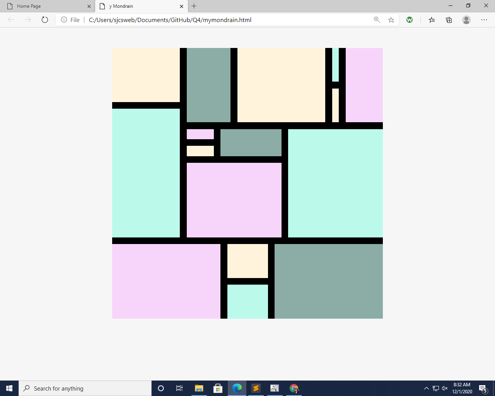
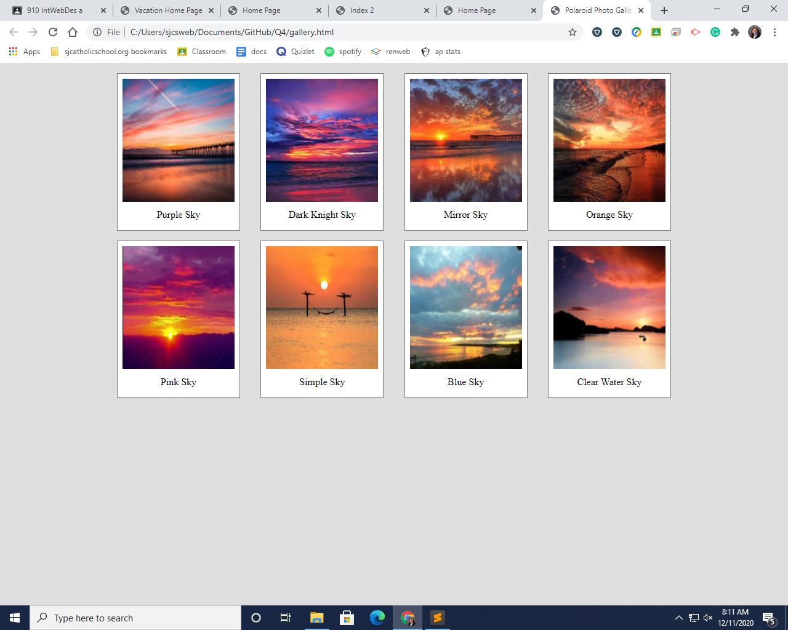
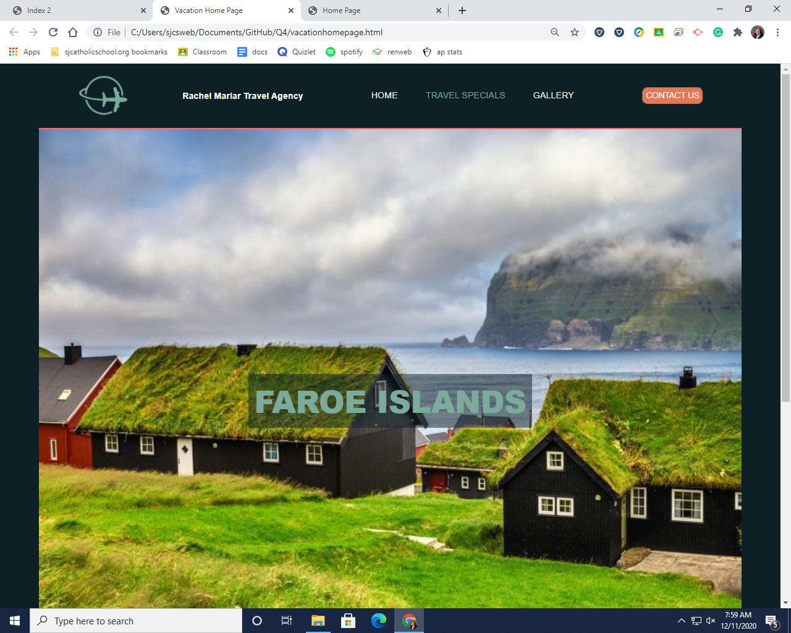

My name is Rachel Margaret Marlar. I was born on October 15, 2002 and am 18 years old. I live right on the line between Greenville county and Laurens county. I live with my mom, dad, younger brother, and my oldest brother who is now living in college at Clemson. I am a senior at St. Joes and I play soccer for the school as well as for my club team. I have many friends at this school and friends from outside from sports teams etc. I have lived in South Carolina my whole life, even though I was baptized in Arizona. I have gone to St. Joes since 6th grade and before that I went to Prince of Peace. I used to play volleyball until I broke my collar bone and had to quit. Fun fact Ive only been out of the country one time of a school trip to Spain and France. I plan to attend college at either Northern Arizona Univeristy or at the University of South Carolina in Columbia. I plan to major in physchology and minor in criminology with a background of forensics science.
We worked on creating art with our knowdlege of colums and rows. The type of art we recreated is called a mondrain. I was told I did a challenging mondrain and even though I kept getting frustrated when I couldnt figure it out, the ending product was worth it.
We were asked to find 10 things and make a gallery collage. I chose sunsets beacause I think they are very pretty. It was so cool to see them turn into polaroid like pictures.
We were asked to recreate a travel agency page with each link working and bringing you to a new page. We started this over quarantine.
